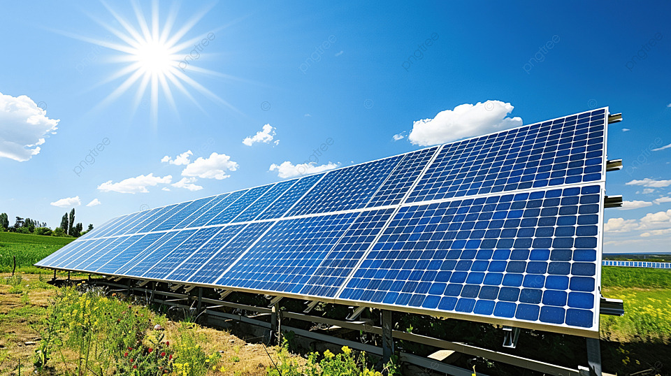
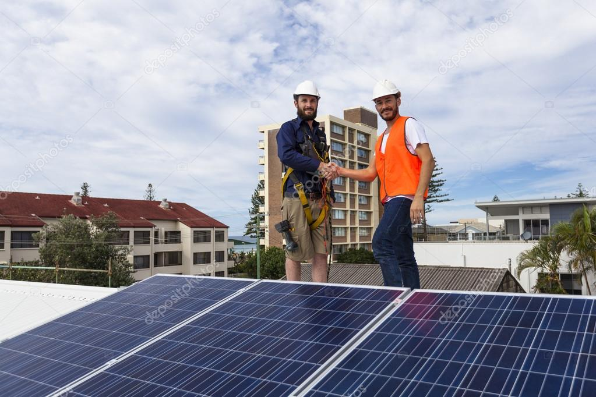
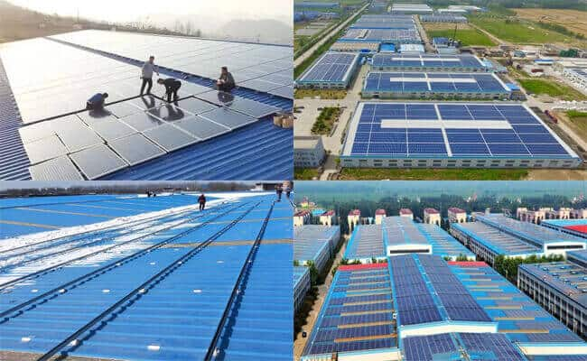

Nous sommes votre partenaire de confiance pour des solutions solaires durables. Découvrez comment nous pouvons vous aider à économiser sur les coûts énergétiques tout en contribuant à un avenir plus vert.

Chez Agadir Solar, nous proposons une gamme complète de services en énergie solaire pour les foyers et les entreprises, y compris l'installation, la maintenance et le conseil en énergie solaire.
Avec Agadir Solar, vous bénéficiez d'une expertise locale, d'un service client exceptionnel et de solutions sur mesure pour répondre à vos besoins en énergie solaire.

Explorez quelques-uns des projets que nous avons réalisés pour des clients satisfaits à travers Agadir et les environs.

Pour plus d'informations sur nos services, ou pour obtenir un devis personnalisé, n'hésitez pas à nous contacter. Ensemble, créons un avenir plus propre et plus lumineux !